교통기사 (2009-08-30 기출문제)
1과목: 교통계획
1. 다른 대중교통수단에 비하여 다음과 같은 특성을 가지고 있는 것은?(오류 신고가 접수된 문제입니다. 반드시 정답과 해설을 확인하시기 바랍니다.)
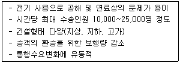
- 지하철
- 지트니
- 경전철
- 버스
(정답률: 알수없음)

2. 다음 중 통행수요를 예측하기 위한 비집계모형(disaggregate model)의 장점이 아닌 것은?
- 집계모형에서 다루기 어려운 비선형관계를 나타낼 수 있다.
- 존 단위로 집계된 가구면접 O-D 자료를 이용하여 평균값을 예측하는데 유용하다.
- 효율적으로 점검하고 수정할 수 있다.
- 자료를 더욱 신속하게 평가하도 분석할 수 있다.
(정답률: 알수없음)
3. 교통망의 구성요소로서 도로망의 교차점이나 인터체인지 그리고 철도망의 역에 해당하는 것으로, 실제 교통망에서 교차로 또는 도로구간에서 도로특성이 변화하는 경우의 지점을 무엇이라 하는가?
- 결절점(node)
- 경로(path)
- 수송로(route)
- 링크(link)
(정답률: 알수없음)
4. 지하철의 요금이 1,200원일 때 승객수요는 8,000명이다. 수요탄성력이 -1.5일 때, 지하철 요금이 1,300원으로 인상되는 경우의 수요는 얼마인가?
- 7,000명
- 6,000명
- 5,500명
- 4,500명
(정답률: 알수없음)
5. 대중교통수단에 관한 설명 중 옳지 않은 것은?
- 대중교통은 대중을 위한 서비스이므로 서비스의 형평한 분배와 광범위한 분배를 위해 정부의 개입이 필요하다.
- 버스는 정지성이 부족하며 노선조정이 어렵다.
- 지하철은 쾌적성은 우수하지만 대량성, 신속성, 기동성이 부족하다.
- 대중교통수단은 많은 승객을 신속하게 수송할 수 있어야 한다.
(정답률: 75%)
6. O-D조사에 사용하는 표본의 크기에 대한 설명 중 가장 옳은 것은?
- 표본의 크기가 증가하면 조사 자료의 정확도는 감소한다.
- 표본의 크기가 증가하면 조사 자료의 정확도의 증가율은 점차 감소한다.
- 표본율이 같은 경우, 통행량이 적은 경우가 통행량이 많은 경우보다 정확한 추정값을 얻기 쉽다.
- 통행량이 많은 경우 표본율을 증가시키면 오차의 범위가 커진다.
(정답률: 알수없음)
7. 다음 중 통행발생(trip generation) 단계에서 사용되는 모형은?
- 프라타법
- 성장률법
- 통행단모형
- 회귀분석법
(정답률: 85%)
8. 경제성 평가기법 중 내부수익률(IRR)법에 관한 설명으로 옳은 것은?
- 사업의 수익성을 측정할 수 없다.
- 평가과정과 결과를 이해하기 어렵다.
- 다른 대안과 비교하기 어렵다.
- 사업의 설대적인 규모를 고려하지 못한다.
(정답률: 100%)
9. 승용차(A)와 버스(B)의 효용함수값이 각각 VA = -5.545, VB = -4.874 일 때, 로짓모형에 의한 두 수단의 선택확률이 모두 옳은 것은?
- P(A)= 0.3521 , P(B)= 0.6479
- P(A)= 0.3212 , P(B)= 0.6788
- P(A)= 0.3383 , P(B)= 0.6617
- P(A)= 0.4137 , P(B)= 0.5863
(정답률: 알수없음)
10. 다음의 교통수요관리 기법 중 주요관리대상이 다른 하나는?
- 10부제 실시
- 혼잡통행료 징수
- 버스전용차로제
- 공공주차장의 주차요금 징수
(정답률: 알수없음)
11. 통행발생(trip generation) 단계에서 사용하는 원단위법의 특징에 관한 설명으로 옳지 않은 것은?
- 교통체계의 최적화 문제에 이용하기 쉽다.
- 계산이 용이하다.
- 토지이용의 측성을 고려하는데 편리하다.
- 장래의 사회·경제구조의 변화에 대한 적용이 가능하다.
(정답률: 알수없음)
12. 다음 중 통행자가 어느 지점에서 다른 지점으로 통행하고자 할 때 통행비용이 가장 적게 되는 경로를 택한다는 전제조건을 이론화한 통행배정(trip assignment) 방법은?
- All or Nothing 법
- Fratar 법
- Entropy 법
- Logit 법
(정답률: 91%)
13. 새로운 교통수단의 도입에 따른 교통선호특성을 파악하기 위하여 설정된 가상적인 상황에 대하여 조사하는 방법을 무엇이라 하는가?
- RP(revealed preference)조사
- SP(stated preference)조사
- 패널(panel)조사
- 활동일지(activity daily)조사
(정답률: 알수없음)
14. 교통계획을 위한 현황자료 조사에서 인구, 소득, 자동차 보유대수, 직업별 고용자수, 학생수 등 사회경제지표의 주요 용도로 가장 거리가 먼 것은?
- 교통투자사업의 재원확보 평가지표로 활용
- 통행조사에서 나타난 통행발생의 설명변수로 활용
- 가구면접 조사 표본을 분석지구 전체에 대해 전수화시키는 경우의 총량지표로 활용
- 토지이용계획안의 수립, 인구와 고용기회를 분포시키는 기초자료로 활용
(정답률: 100%)
15. 다음 중 아래의 설명에 해당하는 대중교통 요금구조는?
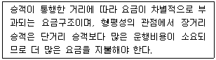
- 정기요금제
- 균일요금제
- 거리요금제
- 구역요금제
(정답률: 알수없음)
16. 편익/비용비(B/C)의 값이 얼마일 때 해당사업이 경제적 타당성이 있다고 보는가?
- 1보다 클 때
- 1보다 작을 때
- 0과 같을 때
- 할인율과 같을 때
(정답률: 알수없음)
17. 한 통근자가 직장에 가기 위하여 집에서 택시로 지하철역까지 간 후 지하철로 갈아타고 직장에 도착한 경우 목적통행수는?
- 1
- 1.5
- 2
- 3
(정답률: 알수없음)
18. 연평균일교통량(AADT:Annual Average Daily Traffic)에 관한 설명으로 옳은 것은?
- 1년간 총 통과차량수로, 한 지역의 연간 통행량 산출에 사용된다.
- 첨두시 동안의 교통량의 변화, 교통량의 한계 산출에 사용된다.
- 도로의 현재 통행 수요 파악, 도로상의 서비스 수준 평가, 간선도로 체계의 개발에 사용된다.
- 첨두시의 첨두길이 및 첨두 정도 판단, 교통제어방법 결정에 사용된다.
(정답률: 알수없음)
19. 다음 중 로짓모형(Logit model)과 프로빗모형(Probit model)에 대한 설명이 옳은 것은?
- 로짓모형은 통합모형이고 프로빗모형은 개별행태모형이다.
- 로짓모형은 이항모형이고 프로빗모형은 다항모형이다.
- 로짓모형은 오차항이 와이블분포를 따르고 프로빗모형은 오차항이 정규분포를 따른다고 가정한다.
- 로짓모형은 비관련대안간의 독립성과 관련한 문제가 없지만 프로빗모형은 자유로운 상관관계를 허용하지 않는다.
(정답률: 80%)
20. 다음 중 도시교통의 일반적인 특성이 아닌 것은?
- 도시의 각 지점을 연결해주는 단거리 교통이다.
- 도시교통은 대량 수송을 필요로 한다.
- 지역의 균형발전을 위한 지역 간 이동을 촉진한다.
- 도심지와 같은 특정지역에 통행이 집중된다.
(정답률: 62%)
2과목: 교통공학
21. 아래 그림은 도시부 도로에서 차량의 궤적을 조사한 것이다. 3대의 차량이 지점 P를 지나 Q에 도착하였을 때, 이들 차량의 이동특성에 대한 설명이 옳지 않은 것은?
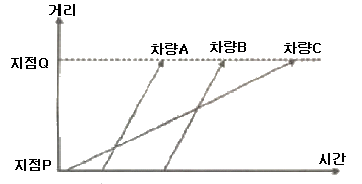
- 차량A와 B는 비슷한 속도로 PQ구간을 주행하였다.
- 차량 간 궤적이 교차하는 곳은 추월이 발생한 곳이다.
- 3대의 차량 모두 감 ㆍ 가속이 없이 등속도로 주행하고 있다.
- 차량C는 매우 빠른 속도로 이동함으로써 차량A와 B를 추월하였다.
(정답률: 알수없음)
22. 어느 신호교차로에서의 총 손실시간은 12초, 각 현시의 접근로별 교통량이 포화교통량에 대한 비의 최대치들의 합이 0.77일 때, 차량의 지체시간을 최소로 하기 위한 신호주기는?
- 70초
- 80초
- 90초
- 100초
(정답률: 알수없음)
23. 다음 중 차량추종이론에 관한 설명이 옳은 것은?
- 주로 도시 내의 단속류에 대한 분석이론이다.
- 차량 추종이 형성되는 형태로서 FIFO, FILO, SIRO가 있다.
- 미시적 관점에서 두 차량 간에 대한 분석이지만, 이러한 개별적 움직임을 통해 교통류 전체의 행태를 추론 할 수 있다.
- 교통류의 특성을 교통류율, 밀도, 속도 등으로 설명하는 이론이다.
(정답률: 알수없음)
24. 신호교차로에서 보행자의 횡단에 필요한 시간을 고려한 최소 녹색 시간은 얼마인가? (단, 보행자 지체시간 : 7초, 황색신호시간 : 4초)
- 13.7초
- 19.7초
- 23.0초
- 27.7초
(정답률: 알수없음)
25. 어느 도로의 제한속도를 재검증하기 위하여 속도조사를 실시하려고 한다. 속도의 표준편차를 12km/h로 하고 허용오차를 2km/h로 하고자 할 때 필요한 표본수는? (단, 신뢰도는 95%이다.)
- 85대
- 100대
- 122대
- 138대
(정답률: 알수없음)
26. 어느 대기행렬시스템의 특성을 「M/D/1」으로 표현한 경우, 이 시스템에 대한 설명이 옳은 것은?
- 도착확률분포 : random, 서비스율 : deterministic, 서비스기관의 수 : 1개소
- 도착확률분포 : deterministic, 서비스율 : random, 서비스기관의 수 : 1개소
- 도착율 : deterministic, 대기행렬상태 : random, 통행특성 : 일방통행
- 도착율 : medium, 대기행렬상태 : drive through, 통행특성 : 일방통행
(정답률: 82%)
27. 교통체계관리(TSM)기법의 특징과 기본요건에 해당하지 않는 것은?
- 투자 및 운영 비용이 저렴할 것
- 계획의 효과측정이 용이할 것
- 기존시설을 최대한 이용할 것
- 소구역보다 교통축과 광역적인 범위를 우선 고려할 것
(정답률: 알수없음)
28. 어느 도로의 차량도착 평균이 2대/분인 포아송분포를 따른다고 할 때, 임의의 1분 동안 차량이 한 대도 도착하지 않을 확률은?
- 0.135
- 0.215
- 0.333
- 0.542
(정답률: 알수없음)
29. 20/20의 시력을 가진 운전자가 80m의 거리에서 글자의 크기가 15cm인 교통표지판을 읽을 수 있다면 20/50의 시력을 가진 운전자가 글자크기가 동일한 표지판을 읽기 위해 필요한 거리는?
- 16m
- 32m
- 40m
- 48m
(정답률: 알수없음)
30. 다음 중 시공도(Time-Space Diagram)에서 확인할 수 없는 사항은?
- 신호 옵셋
- 개별차량 속도
- 진행대폭
- 신호교차로 용량
(정답률: 알수없음)
31. 다음 중 접근지체(approach delay)에 포함되지 않는 것은?
- 정지지체(stopped delay)
- 가속지체(acceleration delay)
- 감속지체(deceleration delay)
- 균일지체(uniform delay)
(정답률: 알수없음)
32. 어느 연속교통류의 속도(V : km/시)와 밀도(D : 대/km)의 관계가 아래와 같을 때 최대교통량(Qmax)은?
- 2,100대/시
- 2,351대/시
- 2,745대/시
- 3,000대/시
(정답률: 알수없음)
33. 다음 중 감응식 신호에 대한 설명이 옳지 않은 것은?
- 정주기식 신호보다 주변 교차로와의 연동이 용이하다.
- 경우에 따라 도착 교통이 없는 현시는 생략될 수도 있다.
- 완전감응식과 반감응식이 있다.
- 일반적으로 교통량의 변동이 심한 독립교차로에서 사용하면 차량의 지체를 줄여주는 효과가 있다.
(정답률: 84%)
34. 어느 신호교차로에서 15분 간격으로 교통량을 조사한 결과가 아래와 같을 때 첨두시간계수(PHF)는?
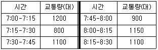
- 0.83
- 0.86
- 0.92
- 0.95
(정답률: 알수없음)
35. 어느 도로의 개선사업을 시행하기 전과 후의 현장관측자료가 아래와 같을 때, 속도 감소 효과 여부를 검정한 결과가 옳은 것은? (단, α= 0.⑤)
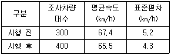
- 속도감소 효과가 없다.
- 속도감소 효과를 판단할 수 없다.
- 속도증가 효과가 있다.
- 속도감소 효과가 있다.
(정답률: 알수없음)
36. 고속도로 기본구간의 이상적인 조건에 해당하지 않는 것은?
- 승용차로만 구성된 교통류
- 차로폭 3.5m 이상
- 측방여유폭 1m이상
- 평지
(정답률: 90%)
37. 다음 중 양방향정지 비신호교차로의 서비스수준을 분석하기 위한 효과척도로 사용되는 것은?
- 방향별 교차로 진입교통량
- 교통량 대 용량비
- 시간당 상충횟수
- 평균운영지체
(정답률: 75%)
38. 다음 중 간선도로 연동신호의 운영방법에 해당하지 않는 것은?
- 동시시스템(simultaneous system)
- 교호시스템(alternate system)
- 연속진행시스템(progression system)
- 대응시스템(responsive system)
(정답률: 알수없음)
39. 어느 도로구간에서 30분 동안 교통량을 측정한 결과 1,000대가 관측되었을 때 평균차두시간(headway)은?(오류 신고가 접수된 문제입니다. 반드시 정답과 해설을 확인하시기 바랍니다.)
- 1.4초
- 1.6초
- 1.8초
- 2.0초
(정답률: 알수없음)
40. 신호교차로에서의 황색신호시간 설계시 고려되는 요소에 해당하지 않는 것은?
- 운전자 반응시간
- 차량 길이
- 교통량
- 교차로 횡단길이
(정답률: 알수없음)
3과목: 교통시설
41. 도로와 철도가 부득이 평면교차하는 경우 그 도로의 구조기준에 관한 설명이 옳지 않은 것은?
- 건널목의 양측에서 각각 30m이내의 구간(건널목 부분을 포함한다)은 직선으로 한다.
- 건널목의 양측에서 각각 30m 이내 구간(건널목 부분을 포함한다) 도로의 종단경사는 3% 이하로 한다.
- 도로와 철도와의 교차각은 30° 이상으로 한다.
- 건널목에서의 철도차량의 최고속도가 50km/h 미만인 경우 가시구간의 길이는 최고 110m 이상으로 한다.
(정답률: 100%)
42. 다음의 설명 중 ( )안에 들어갈 말이 모두 옳은 것은?
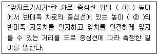
- ① 1.0m ② 1.5m
- ① 1.0m ② 1.2m
- ① 1.5m ② 1.0m
- ① 1.2m ② 1.0m
(정답률: 60%)
43. 다음 중 교통의 안전과 소통의 원활을 도모하기 위하여 설치하는 도로교통정보 안내시설에 관한 설명이 옳지 않은 것은?
- 도로교통정보 안내시설은 설치형식에 따라 문형식(over head)m 내민식(over hang), 노측식이 있다.
- A형 정보판은 주로 설계속도가 80km/h 이상인 고규격 도로에 문형식으로 설치되며, 원격조작되는 LED를 이용하여 문자를 표출한다.
- 도로교통정보 안내시설로는 도로전광표지(VMS), 폐쇄회로티비(CCTV), 교통량검지기 등이 있다.
- 문자의 주요 표시내용은 도로, 기상, 교통, 규제상황, 우회의 지시 등으로 간결하고 명료하게 표현하여야 한다.
(정답률: 알수없음)
44. 설계속도가 120kph인 도로의 평면곡선부에는 최소 길이가 얼마 이상인 완화곡선을 설치하여야 하는가?
- 80m
- 75m
- 70m
- 65m
(정답률: 알수없음)
45. 회전을 위한 보조차로의 길이를 구성하는 요소가 아닌 것은?
- 감속길이
- 대기차로길이
- 회전반경길이
- 진입테이퍼길이
(정답률: 알수없음)
46. 다음 중 차로의 분리를 위한 중앙선의 표시 또는 중앙분리대의 설치에 관한 설명이 옳지 않은 것은?
- 중앙분리대에 설치하는 측대의 폭은 설계속도가 80km/h 이상인 경우 0.5m 이상으로 하고, 80km/h 미만의 경우 0.25m 이상으로 한다.
- 자동차 전용도로의 경우 중앙분리대의 폭은 최소 2.0m 이상이 되도록 한다.
- 중앙분리대 내에는 시설물을 설치할 수 있다.
- 차로를 왕복 방향별로 분리하기 위하여 중앙선을 두 줄로 표시하는 경우 각 중앙선의 중심 사이의 간격은 0.25m 이상으로 한다.
(정답률: 80%)
47. 도로의 노선계획 수립시 통제지점(control point)을 설정할 때 고려하여야 할 사항으로 거리가 먼 것은?
- 도시,마을 또는 도시계획상 용도지역
- 공원, 특별보호지역, 사적지, 천연기념물 등 피해야 할 필요가 있는 곳
- 사태지대, 단층지대, 연약지반 등 지질상의 문제장소 및 정도
- 산지 및 평야지역의 구릉지
(정답률: 92%)
48. 다음과 같은 특징을 갖는 각도주차 형식은? (단, 장애인용의 경우는 고려하지 않음.)
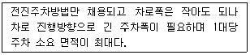
- 30° 주차
- 45° 주차
- 60° 주차
- 90° 주차
(정답률: 알수없음)
49. 다음 그림과 같은 종단곡선의 시점(VPC)으로부터 20m지점에서의 표고는?
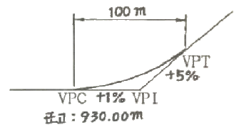
- 930.28m
- 935.28m
- 938.00m
- 958.00m
(정답률: 알수없음)
50. 평면교차로 선형 설계의 기본원칙 중 도로의 교차하는 각도를 직각에 가깝게 하는 이유로 거리가 먼 것은?
- 교차로의 면적을 최소화시킨다.
- 회전 교통량이 줄어든다.
- 교차로에 진입한 운전자나 보행자들이 최소한의 시간을 가지고 교차로를 신속하고 안전하게 통과하도록 한다.
- 예각이나 둔각으로 교차하는 경우보다 운전자의 시야가 확대된다.
(정답률: 알수없음)
51. 다음과 같은 조건에서 P요소법에 따른 주차수요는?
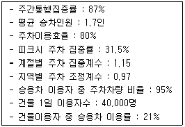
- 약 974대
- 약 1,457대
- 약 1,693대
- 약 1,794대
(정답률: 알수없음)
52. 중앙분리대 또는 길어깨에 차도와 동일한 횡당경사와 구조로 차도에 접속하여 설치하는 부분으로서, 운전자의 시선을 유도하고 옆 부분의 여유를 확보하는 기능을 갖는 것은?
- 측대
- 교통섬
- 분리대
- 연결로
(정답률: 알수없음)
53. 다음 중 고속도로 엇갈림(weavimg) 구간에 관한 설명으로 옳지 않은 것은?
- 엇갈림 구간의 형태는 엇갈림을 하는 차량이 차로를 변경해야 하는 최소 횟수와 출입지점의 위치에 따라 여러 가지 형태가 있다.
- 엇갈림 구간의 길이는 엇갈림 구간 집입로와 본선이 만나는 지점에서 진출로 시작 부분까지의 거리로 한다.
- 엇갈림 구간의 길이는 본선-연결로 엇갈림 구간의 경우 최소 100m를 넘게 하는 것이 통행 안전상 바람직하다.
- 본선-연결로 엇갈림 형태는 각각의 엇갈림 차량들이 원하는 방향으로 주행하기 위하여 반드시 한 번의 차로 변경을 해야 하는 구간을 말한다.
(정답률: 100%)
54. 길이 1,000m 이상의 터널 또는 지하차도에서 오른쪽 길어깨의 폭을 얼마 미만으로 하는 경우에 최소 750m 간격으로 비상주차대를 설치하여야 하는가?
- 3.0m
- 2.5m
- 2.0m
- 1.5m
(정답률: 73%)
55. 지방지역 고속도로의 설계속도는 최소 얼마 이상으로 하여야 하는가? (단, 지형은 평지임.)
- 140km/h
- 120km/h
- 100km/h
- 80km/h
(정답률: 64%)
56. 다음 중 다이아몬드형 인터체인지에 대한 설명으로 옳지 않은 것은?
- 다른 인터체인지에 비하여 필요한 용지가 적게 든다.
- 접속도로와의 연결로 접속부분에서 생기는 평면교차부에서의 도로교통용량이 작아진다.
- 영업소 운영에 적합하나 관리비와 공사비가 많이 든다.
- 교통의 우회거리가 짧아 경제적으로 유리하다.
(정답률: 70%)
57. 다음 중 도로의 구분에 따른 설계기준자동차의 연결이 옳은 것은?
- 고속도로 - 대형자동차
- 주간선도로 - 세미트레일러
- 보조간선도로 - 소형자동차
- 집산도로 - 소형자동차
(정답률: 75%)
58. 등화를 횡으로 배열한 4색 신호등의 배열순서가 옳은 것은?
- 좌로부터 적색, 황색, 녹색, 녹색화살표
- 우로부터 적색, 황색, 녹색, 녹색화살표
- 좌로부터 적색, 황색, 녹색화살표, 녹색
- 우로부터 적색, 황색, 녹색화살표, 녹색
(정답률: 알수없음)
59. 다음 중 터널의 환기시설에 관한 설명이 옳지 않은 것은?
- 도로의 설계속도, 교통조건, 터널의 제원 등을 고려하여 터널에 환기시설을 설치하여야 한다.
- 기계환기방식에는 종류식, 반횡류식, 횡류식이 있다.
- 터널 안의 일산화탄소의 농도는 100ppm 이하가 되도록 환기시설을 설치하여야 한다.
- 환기 시의 터널 안 풍속이 초속 20m를 초과하지 않도록 환기시설을 설치하여야 한다.
(정답률: 70%)
60. 곡석반경(R)이 150m인 평면곡선을 80km/h의 속도로 주행하는 차량이 있다. 마찰계수가 0.2일 때, 이 평면곡선에서 차량이 미끄러지지 않기 위한 최대편경사는?
- 약 0.11
- 약 0.14
- 약 0.17
- 약 0.19
(정답률: 알수없음)
4과목: 도시계획개론
61. 총 인구가 30만명이고 아래와 같은 조건을 가진 도시의 공업지역 소요면적은?
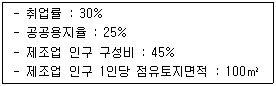
- 4⑤.0 ha
- 40.5 ha
- 540.0 ha
- 54.0 ha
(정답률: 알수없음)
62. 도시의 근린생활권 중 공간적 범위가 가장 작은 단위는?
- 근린지구
- 인보구
- 근린분구
- 근린주구
(정답률: 50%)
63. 다음의 설명 중 ( )에 공통적으로 들어갈 말이 옳은 것은?
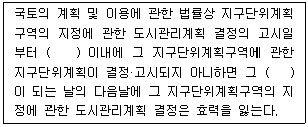
- 6월
- 1년
- 2년
- 3년
(정답률: 알수없음)
64. 도로의 기능별 구분 중 주간선도로를 집산도로 또는 주요교통발생원과 연결하여 시·군 교통의 집산기능을 하고 근린주거구역의 외곽을 형성하는 도로는?
- 일반도로
- 국지도로
- 보조간선도로
- 특수도로
(정답률: 알수없음)
65. 다음 중 근린주구를 물리적 계획의 기본단위로 하여 주구 내의 생활안정을 유지하고 편리성과 쾌적성을 확보하기 위한 6가지의 계획원리를 제시한 사람은?
- 하워드(E. Howard)
- 페리(C.A. Perry)
- 르꼬르뷔제(Le Corbusier)
- 랑팡(P.C. L'Enfant)
(정답률: 알수없음)
66. 다음 중 과거 두 시점 간의 국가경제, 지역경제, 산업구조 등을 분석하여 당해 지역의 어떤 산업이 건전하게 성장하는가 또는 성장할 것인가를 동태적으로 파악하는 방법은?
- 지역성장모형(Regional Growth Theory)
- 경제기반이론(Economic Base Theory)
- 변이할당분석(Shift-Share Analysis)
- 투입산출분석(Input-Output Analysis)
(정답률: 70%)
67. 다음의 설명에 공통으로 해당하는 용어는?
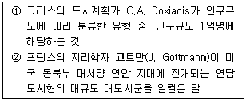
- 에큐메노폴리스
- 메트로폴리스
- 메갈로폴리스
- 다이애나폴리스
(정답률: 알수없음)
68. 녹지지역·관리지역·농림지역 및 자연환경보전지역에 설치할 수 있는 도로에 해당하지 않는 것은?
- 당해 지역을 통과하는 교통량을 처리하기 위한 도로
- 도시계획시설에의 진입도로
- 도시계획사업이 시행되는 지역을 우회하기 위한 도로
- 기존 취락과 연결되는 도로
(정답률: 알수없음)
69. 다음 중 격자형 도로망에 대한 설명으로 옳은 것은?
- 교통의 흐림이 도시집중형이다.
- 지형이 평탄한 도시에 적합하다.
- 도심의 기념비적인 건물을 중심으로 주변과 연결된다.
- 횡적인 연결은 환상선으로, 도심과 교외는 방사선으로 연결 된다.
(정답률: 85%)
70. 도시의 구성요소인 토지와 시설에 대한 물리적 계획의 3요소를 모두 옳게 나열한 것은?
- 인구, 밀도, 정책
- 교통, 주택, 산업
- 배치, 인구, 활동
- 밀도, 배치, 동선
(정답률: 75%)
71. 다음 중 도로의 배치간격 기준이 옳은 것은?
- 주간선도로와 주간선도로의 배치간격 : 2km 내외
- 주간선도로와 보조간선도로의 배치간격 : 1km 내외
- 보조간선도로와 집산도로의 배치간격 : 250m 내외
- 국지도로간의 배치간격 : 50m 내외
(정답률: 알수없음)
72. 다음 중 가도시화 현상에 대한 설명으로 가장 옳은 것은?
- 도시의 부양능력에 비해 지나치게 많은 인구가 도시에 집중하여 인구만 비대해진 도시화 현상
- 몇 개의 대도시와 그 주변 도시들이 서로 연담하여 공간적으로 융합된 지역의 도시화 현상
- 낙후지역의 효과적인 개발을 위하여 성장 잠재력이 큰 지점이나 지방도시에 대한 집중 투자로 방생하는 도시화 현상
- 대도시 중심부의 기능이 약화되어 도시의 공간구조가 바뀌는 현상
(정답률: 79%)
73. 다음 중 선형체계와 비슷하나 보행자 전용도로를 축으로 놀이터, 공원, 집회소 등이 배치되어 기본 주동선을 유지하면서 외부공간을 체계적으로 구성할 수 있는 보행자 전용도로의 구성형식은?
- 평행형 체계(parallel system)
- 포도송이형(cluster system)
- 망상형 체계(network system)
- 입체형 체계(spatial system)
(정답률: 알수없음)
74. 도시의 무질서한 확산을 방지하고 도시주변의 자연환경을 보전하여 도시민의 건전한 생활환경을 확보하기 위하여 도시의 개발을 제한할 필요가 있거나 보안상 도시의 개발을 제한할 필요가 있는 경우에 지정하는 용도구역은?
- 개발제한구역
- 특정시설제한구역
- 도시자연공원구역
- 시가화조정구역
(정답률: 알수없음)
75. 현재 인구가 50만 명인 도시가 있다. 매년 이 도시의 인구가 25,000명씩 증가할 때, 12년 후의 예상인구는?
- 150만명
- 120만명
- 100만명
- 80만명
(정답률: 알수없음)
76. 용도지역 중 상업지역의 도로율 기준은? (단, 도로는 도시계획시설로서의 도로를 의미함.)
- 10% 이상 ~ 20% 미만
- 20% 이상 ~ 30% 미만
- 25% 이상 ~ 35% 미만
- 35% 이상 ~ 45% 미만
(정답률: 알수없음)
77. 도시공간구조이론에서 제3차 산업의 입지이론이라고도 불리는 것은?
- 선형이론
- 동심원이론
- 다핵이론
- 중심지이론
(정답률: 알수없음)
78. 도시의 경제, 사회, 문화적인 특성을 살려 개성있고 지속 가능한 발전을 촉진하기 위하여 경관, 생태, 정보통신, 과학, 문화, 관광 등의 분야별로 지정하는 도시계획 관련 사항은?
- 행정중심복합도시지정
- 시범도시지정
- 지구단위계획
- 도시계획시설계획
(정답률: 알수없음)
79. 다음 중 Kevin Lynch가 주장한 도시이미지 5가지 구성요소에 해당하는 것은?
- 구조(Structure)
- 동일성(Identity)
- 의미(Meaning)
- 상징물(Landmark)
(정답률: 알수없음)
80. 다음 중 공동구에 관한 설명으로 옳지 않은 것은?
- 가로와 도시의 미관을 개선할 수 있다.
- 노면의 내구력이 감소하여 노면유지비가 증대된다.
- 빈번한 노면굴착에 의한 교통장애를 제거할 수 있다.
- 각종 공작물의 관리자가 서로 달라 개설의 필요 정도 및 시기에 대하여 일치가 어렵다.
(정답률: 60%)
5과목: 교통관계법규
81. 다음 중 도로법상 도로의 종류 중 지방도에 대한 설명으로 가장 옳은 것은?
- 자동차 전용도로로서 광역시장이 그 노선을 인정한 것
- 중요 도시, 지정항만, 중요 비행장, 국가산업단지 등을 연결하는 도로로서 댈\통령이 그 노선을 지정한 것
- 간선 또는 보조간선도로를 연결하는 도로로서 관할 도지사가 그 노선을 인정한 것
- 시청 또는 군청 소재지를 서로 연결하는 도로로서 관할 도지사가 그 노선을 인정한 것
(정답률: 70%)
82. 도로법상 관리청은 도로 구조의 손궤방지, 미관 보존 또는 교통에 대한 위험을 방지하기 위하여 도로경계선으로부터 얼마를 초과하지 아니하는 범위에서 접도구역으로 지정할 수 있는가?
- 20m
- 30m
- 40m
- 50m
(정답률: 60%)
83. 다음 중 국토의 계획 및 이용에 관한 법령상의 기반시설에 해당하지 않는 것은?
- 운동장
- 저수지
- 공동주택
- 자동차정류장
(정답률: 알수없음)
84. 다음 중 신호등의 설치기준이 옳은 것은? (단, 차량등을 기준으로 함.)
- 1일 중 교통이 가장 빈번한 8시간 동안 주도로의 자동차 통행량이 시간당 600대(양방향 합계) 이상이고, 부도로에서의 자동차 진입량이 시간당 200대 이상인 교차로
- 1일 중 교통이 가장 빈번한 8시간 동안 주도로의 자동차 통행량이 시간당 500대(양방향 합계) 이상이고, 부도로에서의 자동차 진입량이 시간당 200대 이상인 교차로
- 1일 중 교통이 가장 빈번한 6시간 동안 주도로의 자동차 통행량이 시간당 600대(양방향 합계) 이상이고, 부도로에서의 자동차 진입량이 시간당 100대 이상인 교차로
- 1일 중 교통이 가장 빈번한 6시간 동안 주도로의 자동차 통행량이 시간당 500대(양방향 합계) 이상이고, 부도로에서의 자동차 진입량이 시간당 400대 이상인 교차로
(정답률: 알수없음)
85. 교통안전법상 교통안전관리자의 종류에 해당하지 않는 것은?
- 도로교통안전관리자
- 철도교통안전관리자
- 항만교통안전관리자
- 선박교통안전관리자
(정답률: 알수없음)
86. 다음 중 주차장법규에 따른 노상주차장의 설비기준이 옳지 않은 것은?
- 너비가 6m 미만인 도로에는 노상주차장을 설치하여서는 아니된다.
- 주차대수규모가 20대 이상인 경우에는 장애인전용주차구획을 1면 이상 설치하여야 한다.
- 고속도로·자동차전용도로 또는 고가도로에 설치하여서는 안된다.
- 종단경사도(자동차 진행방향의 기울기)가 6% 이상인 도로로서 보도와 차도의 구별이 되어 있고 그 차도의 너비가 13m인 도로에는 노상주차장의 설치가 가능하다.
(정답률: 알수없음)
87. 다음의 기계식주차장의 설치기준에 관한 설명 중 ( )에 공통적으로 들어갈 말이 옳은 것은?
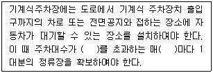
- 10대
- 20대
- 30대
- 50대
(정답률: 알수없음)
88. 교통혼잡 특별관리구역의 교통혼잡 또는 특별관리시설물에 따른 교통홉잡을 완화하기 위한 조치 중 대통령령으로 정하는 통행 여건 개선 및 대중교통 이용촉진을 위한 시책에 포함되지 않는 사항은?
- 신호체계의 개선
- 버스전용차로의 설치
- 노상주차장 확충
- 교통시설의 입체화
(정답률: 알수없음)
89. 연석선, 안전표지나 그와 비슷한 공작물로써 경계를 표시하여 모든 차의 교통에 사용하도록 된 도로의 부분을 무엇이라고 하는가?
- 차로
- 차선
- 차도
- 보도
(정답률: 알수없음)
90. 도로교통법상 안전표지의 종류를 모두 나열한 것은?
- 주의표지, 규제표지, 지시표지, 보조표지, 노면표시
- 주의표지, 규제표지, 지시표지
- 주의표지, 규제표지, 지시표지, 보조표지
- 주의표지, 규제표지, 지시표지, 안내표지
(정답률: 59%)
91. 다음 중 교통유발부담금의 부과대상 시설물 기준이 옳은 것은? (단, 주택법의 규정에 따른 주택단지에 위치한 시설물로서 도로변에 위치하지 아니한 시설물인 경우는 고려하지 않음.)
- 해당 시설물의 각층 바닥면적을 합한 면적이 1,000m2 이상인 시설물
- 해당 시설물의 각층 바닥면적을 합한 면적이 1,500m2 이상인 시설물
- 해당 시설물의 각층 바닥면적을 합한 면적이 2,000m2 이상인 시설물
- 해당 시설물의 각층 바닥면적을 합한 면적이 3,000m2 이상인 시설물
(정답률: 75%)
92. 다음 중 도시교통정비촉진법상 원칙적으로 도시교통정비지역을 지정·고시할 수 있는 자는?(관련 규정 개정전 문제로 여기서는 기존 정답인 2번을 누르면 정답 처리됩니다. 자세한 내용은 해설을 참고하세요.)
- 국무총리
- 국토해양부장관
- 경찰청장
- 행정안전부장관
(정답률: 알수없음)
93. 다음 중 도로교통법령상 승차 또는 적제의 방법과 제한기준에 관한 설명이 옳지 않은 것은?
- 화물자동차의 적재중량은 구조 및 성능에 따르는 적재중량의 11할 이내로 한다.
- 출발지를 관할하는 군수의 허가를 받은 경우에 운전자는 승차인원, 적재중량 및 적재용량에 관한 운행상의 안전기준을 지키지 아니할 수 있다.
- 자동차(고속버스 운송사업용 자동차 및 화물자동차 제외)의 승차인원은 승차정원의 11할 이내로 한다.
- 고속도로에서는 자동차(고속버스 운송사업용 자동차 및 화물자동차 제외)의 승차정원을 넘어서 운행할 수 없다.
(정답률: 알수없음)
94. 다음 중 도로법상 도로의 부속물에 해당하지 않는 것은?
- 도로원표, 이정표, 수선 담당 구역표
- 도로의 방호울타리, 가로수 또는 가로등으로서 도로 관리청이 설치한 것
- 도로와 서로 그 효용을 함께하는 제방, 호안, 횡단도로
- 도로에 연접하는 자동차 주차장 및 도로 수선용 재료적치장과 이들 시설을 종합적으로 관리하는 도로관리사 업소로서 도로관리청이 설치한 것
(정답률: 알수없음)
95. 고속도로에서 야간에 자동차의 고장으로 자동차를 운행할 수 없게 된 때에는 고장자동차의 표지와 함께 사방 몇 미터 지점에서 식별할 수 있는 적색의 섬광신호·전기제등 또는 불꽃신호를 추가로 설치하여야 하는가?
- 200m
- 300m
- 400m
- 500m
(정답률: 알수없음)
96. 교통안전법에 따른 지역교통안전기본계획에 대한 내용 중 ( )안에 들어갈 말이 모두 옳은 것은?
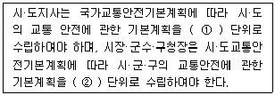
- ① 5년, ② 5년
- ① 5년, ② 10년
- ① 10년, ② 5년
- ① 10년, ② 10년
(정답률: 알수없음)
97. 다음 중 도로교통법상 교차로 통행방법과 교차로에서의 양보운전에 대한 설명이 옳지 않은 것은?
- 모든 차의 운전자는 교차로에서 우회전을 하고자 하는 때에는 미리 도로의 우측자장자리를 서행하면서 우회전하고, 좌회전을 하고자 하는 때에는 미리 도로의 중앙선을 따라 서행하면서 교차로의 중심 안쪽을 이용하여 좌회전하여야 한다.
- 우선순위가 같은 차가 동시에 교통정리가 행하여지고 있지 아니하는 교차로에 들어가고자 하는 때에는 우측도로의 차에 진로를 양보하여야 한다.
- 모든 차의 운전자는 교통정리가 행하여지고 있지 아니하고 일시정지 또는 양보를 표시하는 안전표지가 설치되어 있는 교차로에 들어가고자 하는 때에는 일시정지하거나 양보하여 다른 차의 진행을 방해하여서는 아니된다.
- 교통정리가 행하여지고 있지 아니하는 교차로에 들어가고자 하는 차의 운전자는 해당 차가 통행하고 있는 도로의 폭이 교차하는 도로의 폭보다 넓은 경우에는 서행하여야 한다.
(정답률: 알수없음)
98. 도시교통정비 기본계획에 포함되어야 할 부문별 계획에 포함하여야 하는 사항으로 거리가 먼 것은?
- 도로, 철도, 도시철도 등 광역교통체계의 개선
- 자전거 이용시설의 확충
- 대중교통체계의 개선
- 교통안전대책사업의 개선
(정답률: 알수없음)
99. 다음 중 도로교통법상 원칙적으로 도로를 횡단하는 보행자의 안전을 위하여 횡단보도를 설치할 수 있는 자는?
- 시장 또는 군수
- 운전면허시험기관장
- 지방경찰청장
- 지역도로관리청장
(정답률: 알수없음)
100. 다음 중 도로교통법상 자동차의 앞지르기 금지 장소에 해당하지 않는 곳은?
- 편도 2차로 도로
- 도로의 구부러진 곳
- 터널 안 또는 다리 위
- 교차로
(정답률: 알수없음)
6과목: 교통안전
101. 교차로에서 시거불량에 의한 교통사고 방지 대책으로 가장 거리가 먼 것은?
- 차로폭 확장
- 장애물 제거
- 일단정지표지 설치
- 예고표지의 설치
(정답률: 알수없음)
102. 어느 한 지역의 12km 도로구간의 일평균교통량이 10,000대이고, 이와 유사한 도로구간의 평균사고율이 연간 3.5건 일 때, 유의수준(α)이 0.⑤인 경우 이 도로구간에서의 임계사고율(RC)은? (단, 유의수준(α)이 0.⑤일 때 k = 1.645)
- 약 3.58건(백만차량·km)
- 약 3.98건(백만차량·km)
- 약 4.38건(백만차량·km)
- 약 4.88건(백만차량·km)
(정답률: 알수없음)
103. 사고의 원인을 찾아내어 그에 대한 대책을 수립할 목적으로 교통사고의 특성을 분석한 내용 중 가장 적절한 것은?
- 여자운전자와 남자운전자의 사고건수를 비교한다.
- 도로연장 1km당 사고건수를 비교한다.
- 인접 국가의 차량 1만대당 사고율을 비교한다.
- 도로종류별 평균교통량에 대한 사고율을 비교한다.
(정답률: 알수없음)
104. 과거 3년동안 30건의 교통사고가 발생한 도시부 교차로의 안전도를 개선하기 위하여 원형교차로(roundabout)를 설치하기로 하였다. 대조자료(control data)에 의한 원형교차로의 사고감소효과가 49%일 때 연간 사고 감소 건수는? (단, 설치 전·후의 교통량은 동일하다고 가정한다.)
- 4.9건/년
- 5.3건/년
- 14.7건/년
- 15.3건/년
(정답률: 알수없음)
1⑤. 안전성 측면에서 일방통행도로의 특징에 대한 설명 중 옳지 않은 것은?
- 정면충돌사고는 방지하기 어려우나 측면충돌과 같은 대형사고를 방지할 수 있다.
- 교차로에서의 상충지점수가 적다.
- 회전차량을 추월할 수 있으므로 추돌사고의 가능성이 줄어든다.
- 신호시간을 연속 진행에 맞출 수 있으므로 정지수를 줄이고 차량군을 형성하여 교차로를 통과함으로써 횡단보행자나 횡단교통을 위한 시간간격을 마련할 수 있다.
(정답률: 알수없음)
106. Smeed(1949_는 유럽 20개국의 1938년도 교통사고통계를 이용하여 다음과 같이 모형화하였다. 이에 대한 설명이 옳지 않은 것은? (단, P: 인구수(명), D: 연간 교통사고 사망자수(명), N: 자동차등록대수(대))
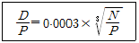
- 인구가 증가하면 교통사고 사망자도 증가한다.
- 자동차등록대수가 증가하면 교통사고사망자수도 증가한다.
- 인구의 한 단위 증가보다 자동차등록대수의 한 단위 증가가 교통사고사망자수에 더 큰 영향을 끼친다.
- 자동차등록대수의 한 단위 증가보다 인구의 한 단위 증가가 교통사고사망자수에 더 큰 영향을 끼친다.
(정답률: 알수없음)
107. 다음 중 상충조사(conflict studies)의 목적이 아닌 것은?
- 도로의 문제지점에서의 기하설계요소를 평가하기 위해 실시한다.
- 상충을 이용하여 사고의 위험성을 평가하기 위해 실시한다.
- 사전·사후조사를 통한 교통안전개선사업의 효과를 분석하기 위해 실시한다.
- 교통사고로 인한 소통 문제구간을 파악하기 위해 실시한다.
(정답률: 알수없음)
108. 다음 중 일반적으로 교통사고조사에서 최초접촉지점(first contact Point)을 판정할 때에 필요한 사항과 가장 관계가 먼 것은?
- 스키드마크가 변형된 위치
- 차체의 파손 위치
- 패인 자국의 위치
- 스패터(spatter)의 위치
(정답률: 알수없음)
109. 다음 중 충돌도(collision diagram)에 관한 설명이 옳지 않은 것은?
- 사고에 관련된 차량이나 보행자의 경로를 나타낸다.
- 사고의 패턴을 알 수 있다.
- 예방책의 시행에 따른 결과를 알 수 없다.
- 거의 축척을 무시하고 작도한다.
(정답률: 82%)
110. 주행 중이던 A차량이 주차해 있던 B차량과 충돌하여 15m를 함께 미끄러져 정지하였다. A와 B차량의 무게가 각각 1000kg, 900kg일 때, A차량의 충돌 전 초기 속도는? (단, 마찰계수는 0.7이며, 경사는 없고 완전비탄성충돌이라고 가정한다.)
- 약 71.5km/h
- 약 82.6km/h
- 약 89.5km/h
- 약 98.1km/h
(정답률: 알수없음)
111. 일반적으로 과속방지시설은 차량의 통행속도를 얼마 이하로 제한할 필요가 있다고 인정되는 도로에 설치하는가?
- 20km/시
- 30km/시
- 40km/시
- 50km/시
(정답률: 91%)
112. 다음 중 치사율을 올바르게 나타낸 식은?
- (사망자수/부상자수) × 100(%)
- (사망자수/사고건수) × 100(%)
- (사망자수/인명사고건수) × 100(%)
- (사망자수/물피사고건수) × 100(%)
(정답률: 91%)
113. 지하식 보행시설에 대한 설명으로 옳지 않은 것은?
- 유지·관리가 어려운 편이다.
- 범죄의 가능성이 크다.
- 시각적으로나 물리적으로 도시미관을 해친다.
- 외부를 볼 수 없으므로 방향 감각을 잃기 쉽다.
(정답률: 92%)
114. 정지하고 있던 차량이 3m/sec2으로 가속하여 72km/h에 도달하기까지 소요되는 시간은?
- 약 5.8초
- 약 6.7초
- 약 7.6초
- 약 8.5초
(정답률: 알수없음)
115. 도로운영과 사고에 관한 설명 중 옳지 않은 것은?
- 교차로 부근에 주차를 하면 사고가 많아지고, 주차회전수(turnover) 역시 사고를 증가시킨다.
- 일방통행제를 막 실시하면 처음 얼마 동안은 사고율이 증가하나 시간이 경과할수록 사고율이 감소할 수도 있다.
- 주 교통류에의 출입이 특정지점에서만 허용되는 완전출입제한은 교통사고감소에 효과적이다.
- 조명은 주간과 야간에 동일한 조도를 유지하여야 운영상 경제적이고 교통사고감소에도 더욱 효과적이다.
(정답률: 알수없음)
116. 다음 중 운전자의 태도와 교통사고와의 일반적인 관계가 옳은 것은?
- 교통사고와 운전자의 책임감과는 관계가 없다.
- 교통사고 운전자는 강한 준법정신을 가지고 있다.
- 사고다발자는 책임강이 강하다.
- 사고다발자는 일반운전자에 비하여 공격적이고 자신의 능력을 과시한다.
(정답률: 94%)
117. 한 차량이 급정지하면서 노면에 생긴 직선미끄럼 흔적의 길이가 각각 다음과 같을 때, 이 차량의 미끄럼거리로 사용되는 것은?(오류 신고가 접수된 문제입니다. 반드시 정답과 해설을 확인하시기 바랍니다.)
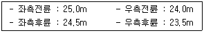
- 23.5m
- 24.0m
- 24.25m
- 25.0m
(정답률: 알수없음)
118. 사고위험지점을 선정할 때 유사한 특성을 가진 지점들에 대해 미리 정해진 평균사고율과 관련하여 특정사고율이 비정상적인지를 결정하기 위하여 사고발생이 포아송 분포를 따른다는 가정에 기초한 분석 방법은?
- 사고율법
- 사고건수법
- 율-품질관리법
- 포아송분포법
(정답률: 91%)
119. 다음 중 사고방지를 주요 목적으로 하는 교통규제 사항은?
- 보행자 무단횡단금지
- 일방통행
- 자동차 전용도로
- 자동차요일제
(정답률: 알수없음)
120. 누적속도분포에서 교통사고방지를 위해 제한속도를 조정하고자 최고 속도 한계를 결정하는데 일반적으로 많이 사용되는 기준은?
- 50% 속도
- 75% 속도
- 85% 속도
- 95% 속도
(정답률: 알수없음)